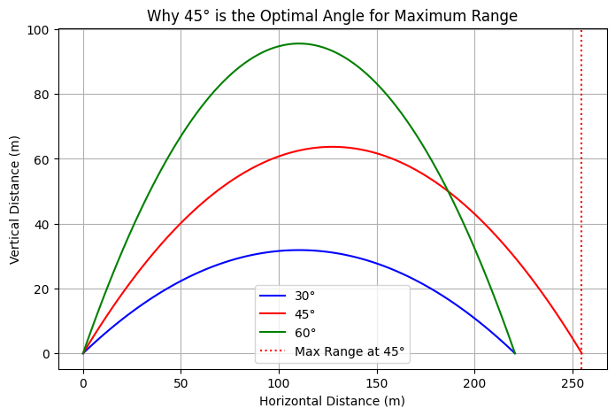
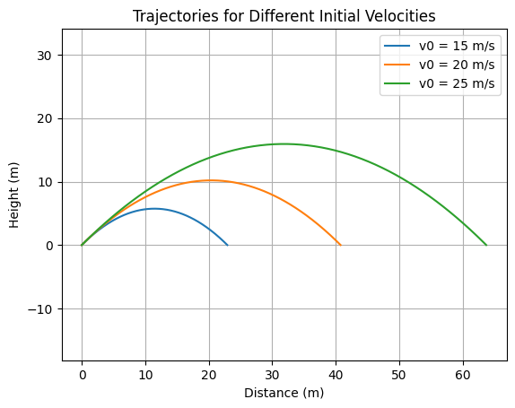
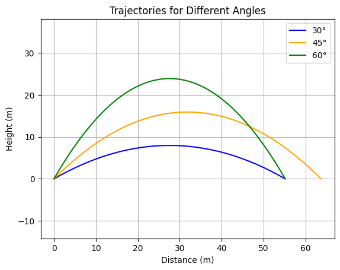
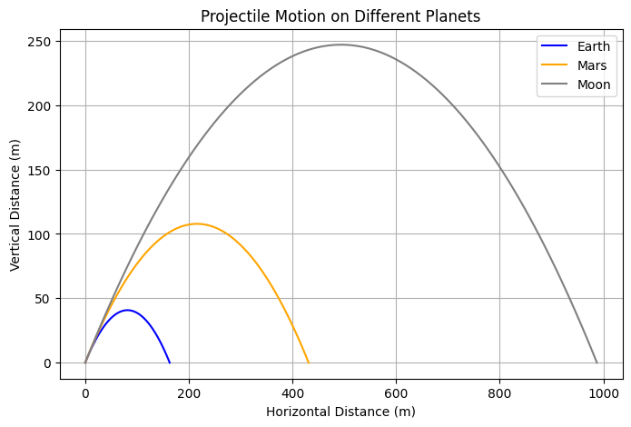
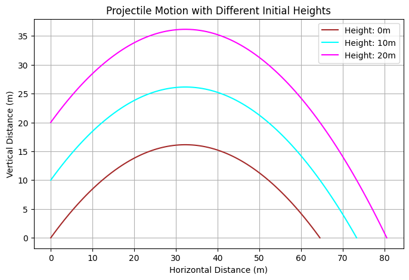
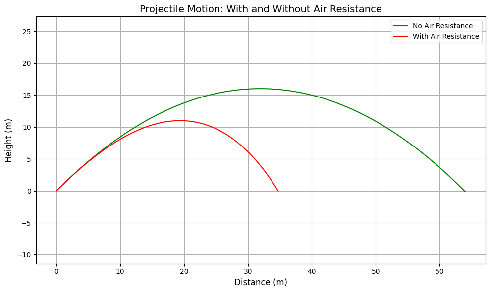
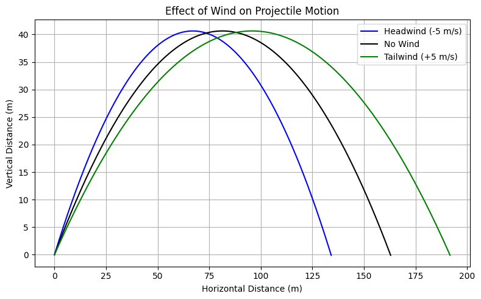
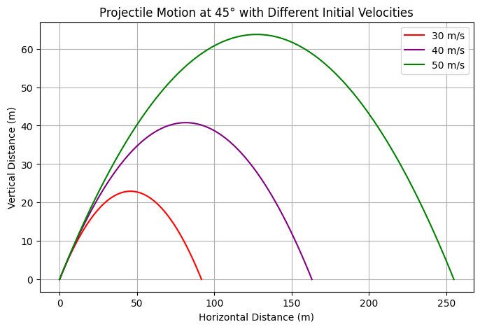

Problem 1
Investigating the Range as a Function of the Angle of Projection
1. Introduction
Have you ever wondered how a soccer ball follows a curved path when kicked? Or how rockets and missiles follow precise trajectories? This is all because of projectile motion!
In this report, i will explore how the range of a projectile depends on the launch angle and break it down step by step.
2. What is Projectile Motion?
Projectile motion happens when an object is launched into the air and moves under the influence of gravity. The motion can be split into two parts:
-
Horizontal motion: The object moves forward with a constant speed.
-
Vertical motion: The object moves up and down due to gravity.
To understand projectile motion better, let's derive some important equations.
3. Key Equations of Motion
3.1 Breaking Motion into Components
If an object is launched with an initial speed \(v_0\) at an angle \(\theta\), we can break this velocity into:
-
Horizontal velocity: \(v_x=v_0\cos\theta\)
-
Vertical velocity: \(v_y=v_0\sin\theta\)
Since gravity only affects vertical motion, the horizontal velocity stays constant.
3.2 Equations for Position and Velocity
Using basic physics formulas, we get:
1️⃣ Horizontal position (distance traveled in time \(t\)):
2️⃣ Vertical position (height at time \(t\)):
3️⃣ Velocity in the horizontal direction (always constant):
4️⃣ Velocity in the vertical direction (changes due to gravity):
3.3 Finding Special Points
Now let's look at some important moments in the projectile’s motion.
✔️ Time of Flight (How long the object stays in the air):
✔️ Maximum Height (The highest point the object reaches):
✔️ Range (Total Distance the Object Travels Before Hitting the Ground):
Interesting Fact: The projectile travels the longest distance when launched at 45° because \(\sin(2\theta)\) is largest at this angle.
Why Does a Projectile Travel the Farthest at 45°?
🔹 The Optimal Angle: 45°
At 45°, the velocity is split equally between horizontal and vertical directions, creating the perfect balance between airtime and forward motion.
Mathematically, the range of a projectile is given by:
where:
- \(R\) = range of the projectile,
- \(v_0\) = initial velocity,
- \(\theta\) = launch angle,
- \(g\) = acceleration due to gravity.
The function \(\sin 2\theta\) reaches its maximum value when:
Thus, a projectile launched at 45° travels the farthest distance because it achieves the optimal balance between horizontal and vertical motion.

4. Family of Solutions
The equations above describe a family of solutions depending on different values of:
-
Launch speed (\(v_0\)): Faster projectiles travel farther and higher. The initial speed determines the kinetic energy and range:
-
\(v_0 = 15\) m/s → short trajectory
- \(v_0 = 20\) m/s → medium
- \(v_0 = 25\) m/s → long and high trajectory

-
Launch angle (\(\theta\)): Determines the shape of the trajectory. The launch angle determines how the initial speed is split into horizontal and vertical components:
-
Low angle (30°): Strong horizontal motion, short airtime → low flat trajectory.
- Optimal angle (45°): Perfect balance of height and range → maximum horizontal distance.
- High angle (60°): High arc, longer airtime but shorter range.

- Gravity (\(g\)): Affects how quickly the projectile falls. The gravitational pull affects both maximum height and time of flight.
| Planet 🌍 | Gravity \(g\) (m/s²) |
|---|---|
| Earth | 9.81 |
| Mars | 3.71 |
| Moon | 1.62 |
- On the Moon, projectiles rise higher and stay in the air much longer.
- On Mars, the behavior is intermediate between Moon and Earth.

-
Initial height (\(h\)): Changes the total flight time and range. Initial height \(h\) changes how far the projectile travels before hitting the ground.
-
\(h = 0\) m: Launch from ground.
- \(h = 10\) m: Launch from a platform.
- \(h = 20\) m: Launch from a rooftop/mountain.

By adjusting these values, we get different possible trajectories, from low and fast motions (like bullets) to high and slow ones (like thrown balls).
5. Limitations of the Idealized Model
The equations we used assume an ideal world where:
❌ No air resistance: In reality, air slows down projectiles.
❌ Flat ground assumption: The model assumes the projectile lands at the same height.
❌ Constant gravity (\(g\)): Gravity actually changes with altitude.
Because of these assumptions, our equations give approximate results in the real world.
6. Extending the Model: Real-World Effects
To make the model more realistic, we can add:
✅ Air Resistance (Drag Force)
- The force slows the projectile down.
- The drag force is proportional to the square of the velocity:
where \(C_d\) is the drag coefficient, \(\rho\) is air density, and \(A\) is the cross-sectional area.

✅ Wind Effects
- A tailwind increases range, while a headwind decreases it.
- A tailwind adds to horizontal velocity → increases range.
- A headwind subtracts → reduces distance.
- Crosswind: affects side motion (not modeled here but relevant in real life).

✅ Launch Altitude
- At high altitudes, air resistance is lower, and gravity is weaker, so objects travel farther.
✅ Rotation of the Earth (Coriolis Effect)
- Important for long-range artillery and missiles.
On a rotating Earth, especially at large scales (e.g., missiles, satellites), the Coriolis force causes the projectile to deviate: - In the Northern Hemisphere: rightward deflection. - In the Southern Hemisphere: leftward deflection.
7. Real-World Applications 🌍
Projectile motion is not just for physics classes! It applies to:
-
Sports: How football players kick the ball at different angles.
-
Military: How missiles and bullets are fired for maximum range.
-
Space Exploration: How rockets are launched at precise angles.
Phython Implimentation
import numpy as np
import matplotlib.pyplot as plt
# Constants
g = 9.81 # Gravity (m/s^2)
angles = [45] # Fixed launch angle
velocities = [30, 40, 50] # Different initial velocities (m/s)
colors = ['red', 'purple', 'green'] # Colors for different trajectories
plt.figure(figsize=(8, 5))
# Loop through each velocity and plot trajectory
for v0, color in zip(velocities, colors):
t_flight = 2 * v0 * np.sin(np.radians(angles[0])) / g # Time of flight
t = np.linspace(0, t_flight, num=100) # Time intervals
x = v0 * np.cos(np.radians(angles[0])) * t # Horizontal distance
y = v0 * np.sin(np.radians(angles[0])) * t - 0.5 * g * t**2 # Vertical distance
plt.plot(x, y, label=f'{v0} m/s', color=color)
# Labels and grid
plt.xlabel("Horizontal Distance (m)")
plt.ylabel("Vertical Distance (m)")
plt.title("Projectile Motion at 45° with Different Initial Velocities")
plt.legend()
plt.grid()
plt.show()
Plot

8. Conclusion
Now we u understand the key ideas behind projectile motion:
-
It has both horizontal and vertical movement.
-
Gravity only affects the vertical motion.
-
The best angle for the longest range is 45°.
-
The initial speed, angle, and gravity all affect the motion.
-
The real world includes air resistance, wind, and altitude effects.
Understanding these principles helps in designing better sports strategies, video game physics, and even launching space missions!